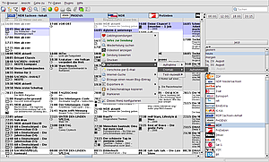

DVB-T-Aufnahmen aus dem TV-Browser starten
Dieser Artikel wurde für die folgenden Ubuntu-Versionen getestet:
Ubuntu 14.04 Trusty Tahr
Zum Verständnis dieses Artikels sind folgende Seiten hilfreich:
TV-Aufnahmen lassen sich ganz komfortabel direkt aus dem TV-Browser heraus programmieren. Hier wird beschrieben, wie man mit dem Aufnahme-Plugin vom TV-Browser zeitgesteuerte DVB-T-Aufnahmen - unter Zuhilfenahme des MPlayers - auch unter Ubuntu erstellen kann. (Wer lieber Kaffeine nutzen möchte, dem sei diese Anleitung  im TV-Browser-Wiki ans Herz gelegt.) Zum Einsatz kommt dazu ein Skript, das einen Eintrag in der crontab erstellt und zum festgelegten Zeitpunkt ein Aufnahme-Skript aufruft, welches alternativ entweder nur aufzeichnet, aufzeichnet und gleichzeitig wiedergibt ("Time-Shift" möglich) oder die gewählte Sendung nur wiedergibt und den Player dann wieder abschaltet. Außerdem kann mit dem Zapping-Skript auch direkt aus dem TV-Browser heraus in laufende Sendungen "gezappt" werden, oder der automatische Start von Sendungen programmiert werden.
im TV-Browser-Wiki ans Herz gelegt.) Zum Einsatz kommt dazu ein Skript, das einen Eintrag in der crontab erstellt und zum festgelegten Zeitpunkt ein Aufnahme-Skript aufruft, welches alternativ entweder nur aufzeichnet, aufzeichnet und gleichzeitig wiedergibt ("Time-Shift" möglich) oder die gewählte Sendung nur wiedergibt und den Player dann wieder abschaltet. Außerdem kann mit dem Zapping-Skript auch direkt aus dem TV-Browser heraus in laufende Sendungen "gezappt" werden, oder der automatische Start von Sendungen programmiert werden.
Hinweis:
Für das Aufnahmeplugin kann openjdk-7 verwendet werden.
Unter Version 3.0.2 ist das Plugin nicht mehr im Standard enthalten; um es zu installieren, muss im TV-Browser unter "Einstellungen -> Plugins" die Schaltfläche "Aktualisiere/Installiere Plugins" oben recht betätigt werden; im sich daraufhin öffnenden Fenster kann das Plugin dann ausgewählt werden.
Installation¶
Die benötigten Skripte liegen im Paket[1] tvbrowser-recording-scripts_0.1-1_all.deb  auf tvbrowser.org vor. Außerdem wird natürlich der TV-Browser benötigt.
auf tvbrowser.org vor. Außerdem wird natürlich der TV-Browser benötigt.
Hinweis!
Fremdpakete können das System gefährden.
Zusätzlich werden die Pakete[2]:
zenity
mplayer
gnome-mplayer
 mit apturl
mit apturl
Paketliste zum Kopieren:
sudo apt-get install zenity mplayer gnome-mplayer
sudo aptitude install zenity mplayer gnome-mplayer
verwendet.
Vorbereitung¶
Der TV-Browser verfügt standardmäßig über ein Aufnahme-Plugin , mit dem Aufnahmen über externe Geräte/Anwendungen programmiert werden können; wenn nötig ggf. in den Einstellungen aktivieren. Nach Installation des Skripte-Paketes befinden sich die Skripte TVAufnahme.sh und TVBrowerCron.sh sowie die kleine Textdatei Auswahl.lst im Verzeichnis /usr/share/tvbrecordingscripts.
Das TVBrowserCron.sh-Skript erstellt Einträge in der crontab-Tabelle des Benutzers. Die Bearbeitung der Crontab-Datei erfolgt über die Doublette.txt-Datei, in der alle Veränderungen (Erstellen und Löschen, sowie alle anderweitig erstellte Crontab-Einträge) dokumentiert werden. Diese Datei, ebenso wie die /var/spool/cron/crontabs/<user>, möglichst nicht händisch bearbeiten. Die crontab-Datei des Benutzers wird, wenn sie nicht vorhanden ist, vom Skript beim ersten Aufruf erstellt.
Die "Aufnahmen" regelt das TVAufnahme.sh-Skript, es wird durch die erstellten crontab-Einträge gestartet. Im Skript ggf. den Pfad für den Speicherort der Aufzeichnungen anpassen, Standard ist /home/USER/Videos. Als Aufnahmeprogramm ist MPlayer eingestellt, zur Wiedergabe GNOME-MPlayer - auch das kann ggf. geändert werden, das Skript dazu in einem Editor[3] mit Root-Rechten[4] bearbeiten.
Geräte-Datei installieren¶
Außerdem wird die Geräte-Datei MPlayer-recordings.tcf benötigt, die von tvbrowser.org heruntergeladen werden kann. Im TV-Browser wird dann unter "Plugins -> Aufnahmesteuerung -> Geräte", mit der Schaltfläche "Gerät importieren" die heruntergeladene Datei ausgewählt; als Gerät erscheint dann MPlayer-Recordings (Standard-Treiber).
Des Weiteren muss im Verzeichnis ~/.mplayer eine funktionsfähige channels.conf vorliegen; die Sendernamen dürfen dabei keine Leer- oder Sonderzeichen enthalten. Zur Konfiguration das erstellte "MPlayer-Recordings (Standard-Treiber)"-Gerät auswählen und in "Gerät konfigurieren -> Sender" für die verwendbaren Sender die Namen bei "Externer Name" exakt so eintragen, wie sie in der channels.conf ohne Leerzeichen angegeben sind. Bei "Einstellungen" können noch weitere Angaben für die Aufnahme-Erstellung gemacht werden. Falls später beim Auswählen der Aufnahme-Option eine Fehlermeldung erscheint, muss ggf. der Wert für "Sonstiges -> Anzahl der Sek. bis zum Abbruch" erhöht oder ganz deaktiviert werden.
Hinweis:
Mögliche Fehlerquelle: Probleme können entstehen, wenn in der channels.conf Sender mit dem selben Kürzel beginnen, z.B. ZDF und ZDFInfo. In solchen Fällen die Namen in der channels.conf und der Konfiguration der Sender in den Plugin-Einstellungen des TV-Browsers abändern, also z.B. nur "Info" statt "ZDFInfo" verwenden!

Benutzung¶
Die Benutzung ist denkbar einfach: im TV-Browser die gewünschte Sendung mit Rechtsklick ( ) aktivieren und im Kontextmenü "Aufnehmen" auswählen. Die Funktion kann auch auf die mittlere Maustaste (
) aktivieren und im Kontextmenü "Aufnehmen" auswählen. Die Funktion kann auch auf die mittlere Maustaste ( ) gelegt werden, dazu "TV-Browser -> Einstellungen -> Allgemeine Einstellungen -> Maustasten -> Mittlere Maustaste -> Aufnehmen" auswählen. Wenn mehrere Geräte vorhanden sind, wird so allerdings kommentarlos das zuerst erstellte Gerät verwendet. Im sich öffnenden Fenster braucht eigentlich nur noch "OK" angeklickt zu werden. Zum Löschen entsprechend vorgehen, die vorgemerkten Sendungen sind farbig unterlegt. Es öffnet sich ein Auswahlfenster, in dem festgelegt wird, welche Aufnahme-Option verwendet werden soll.
) gelegt werden, dazu "TV-Browser -> Einstellungen -> Allgemeine Einstellungen -> Maustasten -> Mittlere Maustaste -> Aufnehmen" auswählen. Wenn mehrere Geräte vorhanden sind, wird so allerdings kommentarlos das zuerst erstellte Gerät verwendet. Im sich öffnenden Fenster braucht eigentlich nur noch "OK" angeklickt zu werden. Zum Löschen entsprechend vorgehen, die vorgemerkten Sendungen sind farbig unterlegt. Es öffnet sich ein Auswahlfenster, in dem festgelegt wird, welche Aufnahme-Option verwendet werden soll.
Mit
crontab -l
kann im Terminal[5] überprüft werden, ob der Cronjob richtig abgespeichert worden ist. Ausgabe-Beispiel:
30 16 27 08 * /usr/share/TVAufnahme.sh Eurosport "Fußball: UEFA Europameisterschaft für Frauen 2009 in Finnland" 7200 Aufnehmen
Die Zahlenfolge am Anfang steht für die Minute, Stunde, Tag und Monat der Aufnahme. Nach dem "*" folgt der Pfad zum Aufnahmeskript, danach die übergebenen Parameter für den Sendernamen, den Titel (in Anführungszeichen, damit Titel mit Leerzeichen nicht als mehrere Variablen interpretiert werden) und die Dauer der Aufnahme (in Sekunden), sowie die "Aufnahmeoption". TVAufnahme.sh verarbeitet die übergebenen Variablen.
Die Aufnahme startet dann zur angegebenen Zeit und wird im voreingestellten Ordner unter Sendername-"Titel der Sendung"-Uhrzeit-Datum.ts abgelegt. Dieses Schema kann im Aufnahme-Skript auch abgewandelt werden. Es löscht den erstellten Crontab-Eintrag am Ende der Aufnahme wieder, ansonsten müssten die Aufnahmen im TV-Browser selbst wieder gelöscht werden, damit der Eintrag in der Crontab-Datei wieder verschwindet. Kleiner Schönheitsfehler: Wenn auch die Crontab-Einträge bei erfolgter Aufnahme gelöscht werden, bleiben die Aufnahme-Markierungen im TV-Browser erhalten. Sie können dort auch gelöscht werden, das ist allerdings nicht unbedingt nötig. Die Löschroutine aus dem TV-Browser heraus überprüft, ob der Eintrag noch existiert und entfernt ihn bzw. nur die Markierung im Browser-Fenster.
Version für VLC¶
Für die Verwendung von VLC als TV-Player kann eine etwas erweiterte Version verwendet werden. Sie liefert auch die Möglichkeit, auch schon begonnenen Sendungen sofort direkt aufzunehmen und nach Ende automatisch zu beenden. Außerdem werden Doppelpunkte aus Sendungsnamen gefiltert, da sonst eine Speicherung nicht möglich ist. Die Geräte-Einstellungen einer installierten MPlayer-Version können weiter verwendet werden, allerdings muss im TV-Browser in "Extras -> Aufnahmesteuerung -> Geräte -> Gerät konfigurieren -> Parameter" die Angabe für die Aufnahme um den Eintrag
{start_unix}erweitert werden, der ganz am Ende (mit dem Leerzeichen davor!) hinzugefügt wird.
Die Dateien TVAufnahme.sh und TVBrowserCron.sh herunterladen, ausführbar machen und unter /usr/share/tvbrecordingscripts/ die "alten" Versionen ersetzen. Es kann auch jeder beliebige andere Ort verwendet werden, dazu müssen in "Extras -> Aufnahmesteuerung -> Geräte -> Gerät konfigurieren -> Applikation" die Pfadangabe zu TVBrowserCron.sh angepasst, im Skript die Pfadangaben zu TVAufnahme.sh dann entsprechend korrigiert sowie die Datei Auswahl.lst ebenfalls in den verwendeten Ordner kopiert werden.
Die Funktionsweise ist identisch mit der MPlayer-Version; für Verwendung der Option "Aufnehmen und gleichzeitig ansehen" muss VLC allerdings in mehreren Instanzen laufen können (in VLC unter "Extras-> Einstellungen -> Interface" ggf. die Checkbox "Nur eine Instanz erlauben" deaktivieren.)
Zapping aus dem TV-Browser heraus¶
Reine Auswahl und Senderwechsel über den TV-Browser bietet das "Zapping"-Programm. Dazu muss das Paket tvbrowser-zapping-scripts_0.2-1_all.deb von tvbrowser.org installiert werden. Das Zapping.sh-Skript wird im Verzeichnis /usr/share/tvbzappingscript/ abgelegt.
Hinweis!
Fremdpakete können das System gefährden.
Konfiguration¶
Um es nutzen zu können, muss im TV-Browser zunächst die Gerätedatei MPlayerZapping.tcf, die ebenfalls im angegebene Verzeichnis abgelegt wird, importiert werden. Dazu im Reiter "TV-Browser -> Einstellungen" wählen, dort "Plugins -> Aufnahmesteuerung" aufrufen. Im Reiter "Geräte" die Schaltfläche "Gerät importieren" anklicken. Im sich öffnenden Fenster zum besagten Verzeichnis navigieren und die Gerätedatei aufrufen. Es wird das Gerät MPlayer-Zapping (Standard Treiber) angelegt. Auch hier müssen in den Einstellungen zum Gerät, wie oben beschrieben, die Sendernamen exakt so wie in der ~/.mplayer/channels.conf angegeben werden.
Benutzung¶
Mit diesem kleinen Programm kann der TV-Browser zum "intelligenten" Zapping verwendet werden. Beim "Aufnahme"-Aufruf wird zunächst die Anfangszeit der Sendung geprüft. Wenn sie schon begonnen hat, wird der MPlayer sofort mit dem gewählten Sender gestartet, ansonsten wird ein at-Job eingetragen und zu Beginn der Sendung ausgeführt. Ein ggf. laufender MPlayer wird dabei automatisch abgebrochen - daher Vorsicht, wenn gleichzeitig Aufnahmen via MPlayer programmiert sind!
Das Skript macht sich zunutze, dass das Aufnahme-Plugin at-Jobs nicht einwandfrei akzeptiert; sie werden zwar gespeichert und ausgeführt, aber nicht als Aufnahme im TV-Browser angegeben, die Sendungen werden auch nicht farbig unterlegt. Daher erfolgt auch beim "direkten" Starten zunächst ein "Dummy"-at-Aufruf, der zudem in der Vergangenheit liegt. Um die resultierenden "Fehlermeldungen" zu unterdrücken, ist im Einstellungsreiter zur Konfiguration des Aufnahmegerätes "überprüfen, ob ein Fehler-Wert zurückgegeben wird" nicht aktiviert, aber "Rückgabe-Dialog nur bei Fehler anzeigen" angewählt. Wenn auch "Zeige Titel- und Einstellungsdialog" abgewählt ist, kann ohne störende Rückmeldungen gezappt werden.
Hinweis:
Bei Beenden des TV-Browsers wird auch die Wiedergabe abgebrochen! Gilt allerdings nicht für die VLC-Version.
Wer statt des MPlayers Varianten des Programms wie SMplayer oder KMplayer verwenden möchte, muss im Skript die killall-Befehle in einem Editor[3] mit Root-Rechten[4] direkt auf mplayer ausrichten, ansonsten läuft ggf. der Ton "alten" der Anwendung weiter, und die "neue" startet nicht richtig. Der GNOME-MPlayer hat keine Probleme. Wenn man zwei Bildschirme zur Verfügung hat, können natürlich der Player und der TV-Browser auf jeweils einem ausgegeben werden; dazu ggf. die Display-Nummer anpassen.
Variante für VLC¶
Da unter VLC der Senderwechsel wesentlich schneller vollzogen wird, existiert mit Zapping.sh eine Variante für diesen Player. Die Datei herunterladen, ausführbar machen, und statt der alten Datei Zapping.sh einsetzen. Die Gerätedatei der MPlayer-Variante kann weiter verwendet werden, allerdings müssen die Einstellungen unter "Extras -> Aufnahmesteuerung -> Geräte -> Gerät konfigurieren -> Parameter" für die Aufnahme in
{isset(channel_name_external_quiet,channel_name)} {start_unix}umgeändert werden. Diese Version beendet beim Senderwechsel jeweils nur die vom Skript selbst aufgerufene Instanz von VLC, sodass andere Wiedergaben (insbesondere ggf. anderweitig laufende VLC-Aufnahmen) nicht ungewollt beendet werden. Bei mehreren TV-Karten kann die Variable $PLAYER=/usr/bin/vlc um die Option --dvb-adapter=X erweitert werden, um die gewünschte Karte anzusteuern. $PLAYER="/usr/bin/vlc --dvb-adapter=1" würde also die zweite im System gefundene Karte verwenden (Zählung beginnt bei 0).
Alternativen¶
SimplePVR - Weiterentwickeltes Plugin für den TV-Browser mit ebenso komfortabler Bedienung und zusätzlichen Funktionen, z.B. automatische Überprüfung auf Überschneidungen, Aufnahmeverwaltung, automatische Verarbeitung der Aufnahmen etc.
Me TV ist ein TV-Player, der nach ähnlichem Prinzip aufgebaut ist, auch dort lassen sich TV-Sender über EPG-Einträge starten oder Aufnahmen programmieren.
Auch in Kaffeine lassen sich Aufnahmen nach EPG programmieren.
tvtr TV Timer erlaubt zeitgesteuerte DVB-Aufnahmen via Tray-Applet, gleichzeitiges Anschauen ist mit xine vorgesehen.
Skripte/TV-Skript - Einsatz von Bash-Skripten und Zenity zur Aufnahmeprogrammierung.
Links¶
TS-Daten archivieren - Artikel zur Weiterverarbeitung der Aufnahmen
Hinweise für Nutzung mit DVB-S und DVD-Erstellung aus den Aufnahmen
Forums-Thread zur einer Version mit dem
Config::Crontab-Modul
- Erstellt mit Inyoka
-
 2004 – 2017 ubuntuusers.de • Einige Rechte vorbehalten
2004 – 2017 ubuntuusers.de • Einige Rechte vorbehalten
Lizenz • Kontakt • Datenschutz • Impressum • Serverstatus -
Serverhousing gespendet von